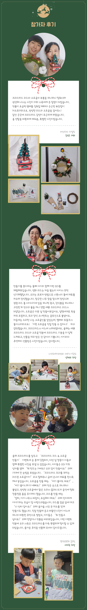

연말이 가까워지면 일상의 속도도 조금씩 달라진다. 바쁜 하루 속에서도 작은 장식을 하나 들여놓고 싶어지는 시기, 석유사랑이 준비한 ‘크리스마스 리스 & 오르골 만들기’ 이벤트를 통해 공사 구성원들은 직접 작품을 완성하며 미리 크리스마스 분위기를 느낄 수 있었다. 참여자들은 생화 리스와 나무 오르골 DIY 키트를 받아, 하나하나 조립하고 장식하며 가족과 함께 소중한 시간을 보냈다. 완성된 작품은 집안 곳곳에 포근한 연말 분위기를 전하며, 올 연말을 한층 더 따뜻하게 만들어줄 것이다. 참여자들이 가족과 함께 직접 만든 리스와 오르골, 그리고 그 과정에서 느낀 즐거움과 따뜻한 이야기를 만나보자.
